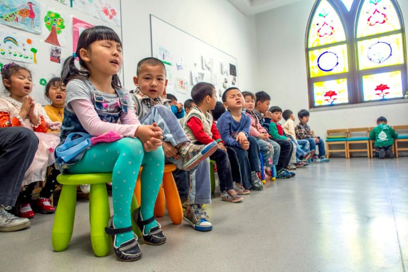

사역
선교사 가정의 자녀가 학업을 이어 가도록 도와, 가정이 현장에 남을 수 있게 합니다.

박해의 그늘 아래서도 아시아 선교사는 복음을 거의 듣지 못한 이웃에게 소망을 전합니다. 그러나 가장 큰 걱정 중 하나는 자녀 교육입니다. 안정과 자료, 안전이 흔들릴 때 아이들은 어떻게 배울 수 있을까요?
복음에 적대적인 지역에서 사역하는 많은 가정에게, 좋은 교육은 닿기 어려운 일입니다. 잦은 이동, 경제적 어려움, 차별이나 안전 문제로 현지 학교에 보내기 어려운 경우가 있습니다. 배움이 끊기면 자녀의 미래와 사역의 미래가 함께 흔들립니다.
후원으로 이 아이들이 학업과 믿음이 함께 자라는 안정된 교육을 받게 할 수 있습니다. 장학금, 온라인 학습, 홈스쿨 지원, 안전한 학습 자리를 통해 믿음과 앞으로의 길을 준비합니다.
사역이 든든해집니다. 자녀 교육이 지켜지면 부모는 더 집중해서, 더 오래 사역할 수 있습니다.
다음 리더가 자랍니다. 아이들은 어려운 자리에서의 믿음을 가까이서 보며, 복음을 이어 갈 제자로 자랍니다.
가정의 흔들림을 줄입니다. 교육은 가정이 경제적 붕괴를 두려워하지 않고 사역을 이어 가게 돕습니다.
후원 하나하나가 한 아이의 길을 바꿉니다.